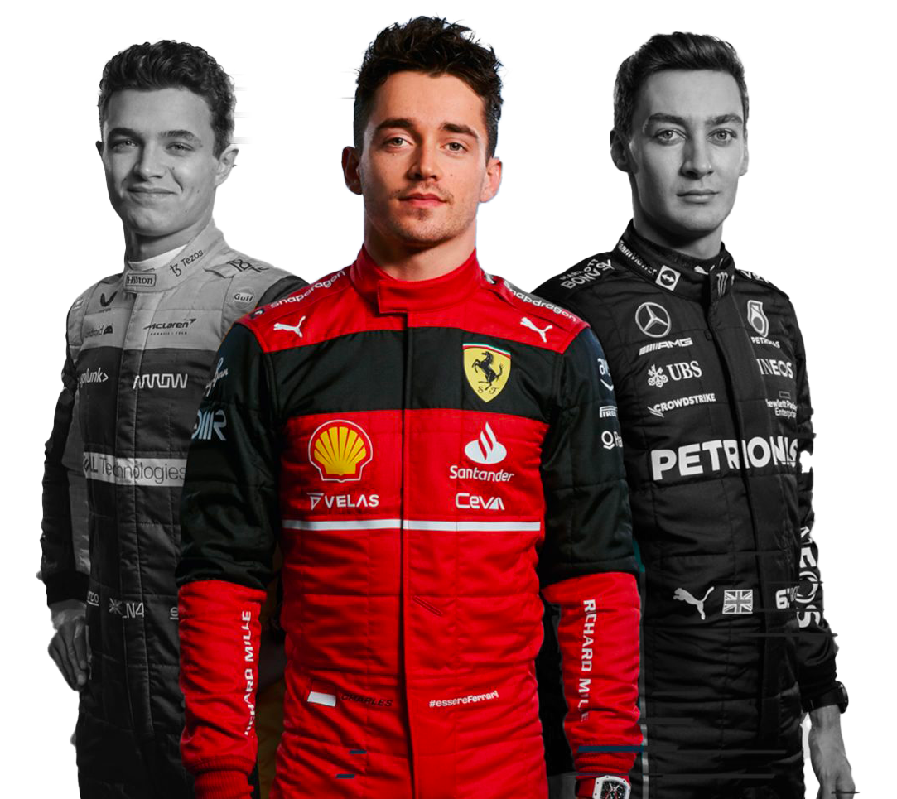
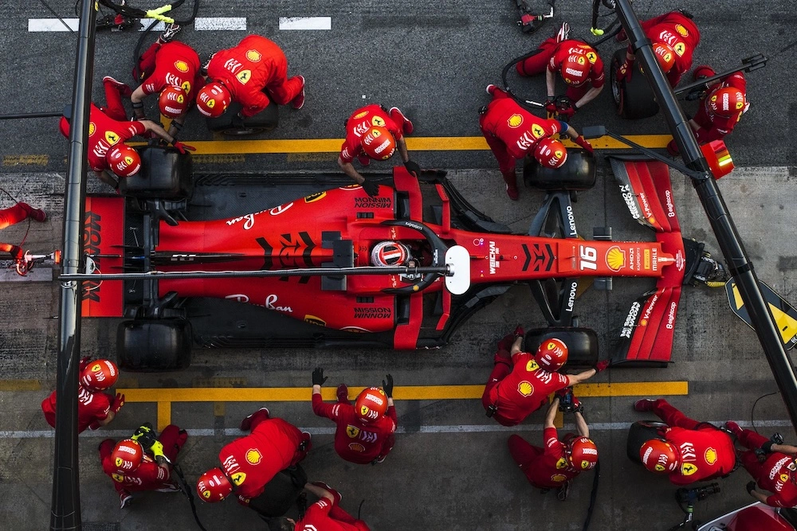
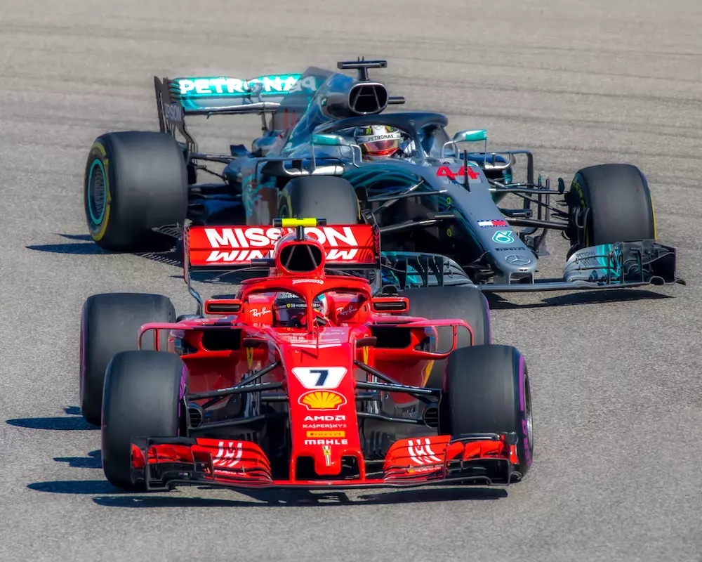

Formule 1
Le temple de la Performance.
Un engouement de plus en plus important touche la F1 depuis c’est deux dernières années dû à Netflix. Charles Leclerc est un des visages de proue ce renouveau de la F1.


MAIS LA F1, C’EST QUOI?
Entre vitesse, stratégie, et sportivité, la F1 est la catégorie reine du sport automobile. Une saison se déroule en plusieurs week-end, 23 sont prévu en 2023. Chaque weekends procure de nouvelles émotions et apport sa part de nouveauté et de scandale, ils se déroulent en trois parties que vous découvrirez dans la suite de ce carroussel. En bref la Formule 1 c'est 20 pilotes 10 écuries et 1 seul gagnant et bien plus.
LES ESSAIES LIBRES
Un week-end de course commence par des essais libres. C’est une étape cruciale dans le développement des voitures, cela permet de réaliser des tests à taille réelle et d’adapter sa stratégie pour la course. La majorité du temps, 3 séances sont disputées, deux le vendredi et une le samedi. Le temps de chaque pilote est dévoilé après la séance, cela permet aux spectateurs et aux écuries de ce procheter sur les écuries favorites pour le dimanche et les améliorations à apporter.

LES QUALIFICATIONS
Le moment le plus déterminant pour la course du dimanche provient le samedi avec les qualifications. L’objectif est simple, mais la réalisation est complexe. Les pilotes doivent réaliser le meilleur tour possible avec ou sans l’aide de son coéquipier. Aucune gestion des pneus n’est nécessaire durant les qualifications, mais la stratégie est toujours présente.

LA COURSE
Ça y est, nous y sommes, le coeur palpite en attendant l’extinction des feux. Le départ de la course peut être lancé. Mais les pilotes ne font pas ce qu'ils veulent, les commissaires de courses sont là pour juger les actions dangereuses et pénalisé les pilotes responsables. Nous avons pu voir en 2022 une très belle bataille sur la piste entre Max Verstapend et Charles Leclerc. Le dimanche de course réserve toujours des surprises.
LA STRATÉGIE
L’élément le plus important d’une écurie, l’élément qui peut faire basculer le cours d’une course est la stratégie. La stratégie est honnie présente dans la formule 1. Sans son équipe, le pilote n’est rien et vice-versa, mais si les stratèges se trompent de stratégie comme Ferrari à Monaco en 2022, une potentielle victoire peut s’échapper. La stratégie comprend la gestion des pneus, du carburant, d'autres pilotes etc.
LES BASES DE LA F1
F1 ET SCANDALES
La formule 1 est malheureusement souvent synonyme de scandale, beaucoup de pilotes peuvent être concerné. Cela peut être dû à des décisions de la FIA controversé, où d'autres événements externes. Charles Leclerc comme l’ensemble des autres pilotes est concerné par ces controverses. Celle qui a marqué 2022 et celle de Pierre Gasly pilote français mais de Charles, je vous laisse découvrir une explication complète de cette histoire et bien d’autres en cliquant sur le bouton ci-dessous.